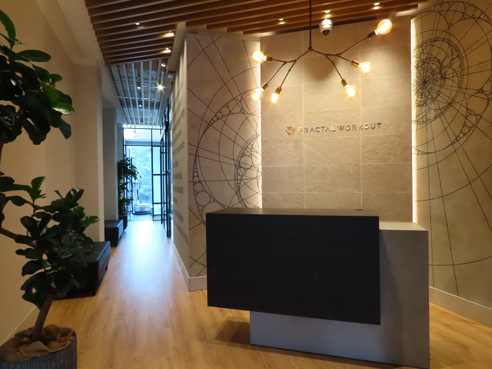
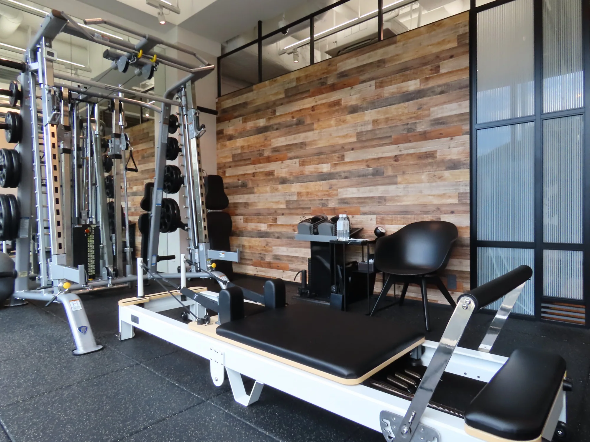

FRACTAL MEDICAL FITNESS
医師から運動を推奨されたら、
運動医療費控除対象になるジムをご検討ください。
厚生労働省許認可施設で医療機関連携をしている運動施設だから、
安心して運動の実施を行えます。※条件を満たす場合、医療費控除の対象となる可能性あり
-
 ACCESS 原宿駅徒歩30秒
ACCESS 原宿駅徒歩30秒
-
 CERTIFIED 厚生労働大臣認定 指定運動療法施設
CERTIFIED 厚生労働大臣認定 指定運動療法施設
-
 PRESCRIPTION 運動療法処方箋対応 ※条件を満たす場合、医療費控除の対象となる可能性あり
PRESCRIPTION 運動療法処方箋対応 ※条件を満たす場合、医療費控除の対象となる可能性あり


その健診結果や不調、 運動で整えるサイン かもしれません。

血圧、血糖、脂質、体重など、気になる項目が増えてきた。何から始めればよいか分からない方に、運動の入口をつくります。

過去のケガや体力低下があり、強い運動は不安。Power Plateなども用いながら、低負荷から安全に進めます。

一人で始めると無理をしすぎる、または続かない。測定と面談を重ねながら、生活に組み込める運動習慣へ導きます。
そんな方のための 医療連携型フィットネスが フラクタルメディカルフィットネスです。

FRACTAL MEDICAL FITNESSは、健診結果・体力低下・生活習慣の乱れが気になる方のためのメディカルフィットネスです。医療的な視点を取り入れ、無理のない運動を専門家と一緒に設計します。
目指すのは、短期間で追い込むことではなく、体調・数値・生活リズムに合わせて続けられる状態。医療機関への相談が必要な場合も含め、無理なく安全な選択を大切にします。
私たちが目指す理想
それは、検査数値だけでなく、
体力・睡眠・気分まで整い、
毎日を安心して動けること。
運動前の不安を、
納得できる計画に変えます。
カウンセリング、測定、運動チェックを分けて行い、現在の状態と安全な運動範囲を確認。強度や頻度を曖昧にせず、今日できることから始めます。
通うたびに変化を記録し、疲れや痛み、生活の予定に合わせて内容を更新。無理に頑張らせるのではなく、続けられる判断基準を一緒に育てます。
健診結果、医師からの助言、痛みや不安を整理し、始める前の迷いを減らします。
その日の体調と測定結果を見ながら、強度・回数・休憩を細かく調整します。
仕事や通院、家庭の予定に合わせて、続けやすい頻度と習慣化の形を決めます。
FRACTAL MEDICAL FITNESSが
選ばれる
4つの理由
医療的な視点で始める：
安心のフィットネス設計
健診結果や体調、運動歴を丁寧にヒアリング。必要に応じて医療機関での確認をおすすめしながら、安全な運動範囲を考えます。
体組成、血圧、柔軟性、姿勢、歩行などを確認し、主観ではなくデータも見ながらプランを設計します。
清潔で落ち着いた空間で、初めての方や運動に不安がある方でも取り組みやすい時間を提供します。

生活習慣病リスクに備える：
低負荷からの運動習慣
血圧・血糖・脂質・体重などが気になる方に、急に追い込まない有酸素運動と筋コンディショニングを提案します。
運動強度を確認しながら進めるため、久しぶりの運動でも始めやすい設計です。

医療費控除の制度理解：
条件と必要書類を案内
指定運動療法施設で医師の運動療法処方に基づく利用など、条件を満たす場合に施設利用料が医療費控除の対象となる制度があります。
制度の対象可否は施設の指定状況・医師の指示・必要書類に左右されます。LPでは断定せず、相談時に確認できるようご案内します。

一時的な運動ではなく
「通い続けられる健康管理」へ：
長期伴走
メディカルフィットネスは、1回だけ頑張る場所ではありません。測定、運動、振り返りを重ね、生活に定着する健康管理へつなげます。
短期的な体重変化だけでなく、動ける身体、疲れにくい日常、将来に備える習慣を目指します。

健診結果と体力に向き合う、
メディカル
フィットネス
プログラム
健康状態の確認と
目標設定
健診結果、既往歴、運動歴、生活リズムを丁寧にヒアリング。無理なく始められる目標と優先順位を設定します。
体組成・血圧・
体力チェック
体組成や血圧、柔軟性、バランス、歩行などを確認。現在地を見える化し、運動強度の目安を決めます。
有酸素・筋力・
コンディショニング
ウォーキング、バイク、軽い筋力運動、ストレッチを組み合わせ、体調に合わせて安全に進めます。
生活習慣の
小さな改善
睡眠、食事、日常活動量なども確認し、運動効果を生活に定着させるための小さな改善を提案します。
定期測定と
プラン更新
体組成や体力、主観的な疲れやすさを確認し、データと体感の両面からプランを調整します。
医療費控除の考え方

医療費控除の対象となる可能性について
指定運動療法施設の利用料金は、医師の処方に基づき、疾病の治療のために運動療法を行う場合、医療費控除の対象となる可能性があります。
通常、スポーツジムやフィットネス施設の利用料金は、健康維持や体力づくりを目的とする費用として扱われるため、医療費控除の対象にはなりません。ただし、厚生労働省が指定する指定運動療法施設で、医師の運動療法処方せんに基づいて運動療法を実施し、必要な証明書や領収証がある場合は、医師の治療を受けるために直接必要な費用として認められる可能性があります。
対象となる可能性がある方
- 医師から疾病の治療のために運動療法を指示されている方
- 運動療法処方せんをお持ちの方
- 指定運動療法施設で、処方内容に基づいた運動療法を実施する方
- 施設の領収証や医師の証明書など、必要書類を保管できる方
対象外となる可能性がある利用
- 美容、リラクゼーション、一般的な健康づくり目的の利用
- 医師の処方に基づかない自己判断でのジム利用
- 特定保健指導後に、自分でスポーツジムへ通う場合
- 治療目的との関係が確認できない利用
医療費控除の対象可否は、医師の指示内容、利用目的、必要書類、申告内容によって異なります。最終的な判断は、税務署または税理士へご確認ください。
上質な運動空間を両立

FRACTAL MEDICAL FITNESSは、JR原宿駅から徒歩30秒という通いやすいロケーションに位置します。 健康状態や運動への不安を相談しやすいよう、空間は清潔感と落ち着きを大切に設計。周囲を気にせず、ご自身の状態に合わせて取り組めます。
医療機関のような安心感と、パーソナルジムのような続けやすさ。その両方を大切にし、健康づくりを日常に組み込める場所を目指します。 営業時間は早朝6時から22時まで。仕事前後や休日など、ライフスタイルに合わせてご利用いただけます。


次は
あなたが
健康を見える化し、
動ける毎日を
取り戻す番です。
FRACTAL MEDICAL FITNESSの
施設体験＆健康相談では、
健診結果や体力のお悩み、
運動への不安を丁寧にヒアリングし、
今の状態に合う進め方をご提案します。
自己流ではない健康づくりを、
ぜひご自身でご体感ください。
無理な勧誘は一切ございません。
まずはお気軽にお越しいただき、
空間・サポート・運動設計があなたに合うか、
ゆっくりご判断ください。